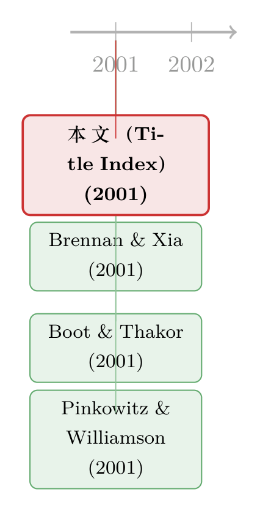

一份没有作者的「论文」：从一页索引里，读出 2001 年的金融学在想什么
本文读的是 《Title Index》(2001, Review of Financial Studies)：它不是一篇论文，而是 RFS 第 14 卷年终的「标题索引」——一张按字母排序、列出全年约 38 篇文章及其起始页码的清单。它没有作者、没有摘要、没有一个回归系数。但如果你把字母序「翻译」回主题序，这页纸就成了一张 X 光片，照出世纪之交的金融经济学，心里到底在惦记着什么。
1 一份「读不出结论」的文献
我们habitually 打开一篇论文，先找摘要，再找那张关键的表，最后去看它把系数估到了几位小数。可这一次，你翻开的东西，连一句完整的话都没有。
它叫 标题索引（Title Index），躺在 Review of Financial Studies（下称 RFS）第 14 卷的最后三页（p. 1237–1239）。它做的事极其朴素：把这一年登过的每一篇文章，按标题首字母 A 到 V 排好，后面缀上作者名和起始页码。仅此而已。
于是一个略带挑衅的问题摆在面前：从一张按字母排的清单里，到底能读出什么？ 字母序是一种近乎暴力的排序——它把「期权定价」和「德国公司治理」仅仅因为开头一个字母就拆得老远，又把毫不相干的两篇论文仅仅因为都叫 Are… 就摁在一起。它刻意地、彻底地抹掉了一个学科本来的骨架。
这正是它有意思的地方。本文想说的是：索引的价值，恰恰不在于它「说了什么」，而在于当你把它那套字母序拆掉、重新按主题拼回去之后，它会不由自主地暴露出一整年的研究重心。换句话说，索引是期刊的自画像——只不过它是被打乱了五官的那一张，需要你把它复原。
（关于读这一类「非论文」的乐趣，本博客已经有过几次尝试，可参见《七百一十七页上的一段话：一篇没有数据的 RFS「论文」》与《卷末那一页：从一份「索引」里，读出 2003 年的金融学在想什么》。本文做的是同一件事，只是把镜头对准了更早的 2001 年。）
2 先把字母序拆掉
首先，我们做一件索引自己拒绝做的事：重新分类。
把这 38 篇文章（外加 3 篇书评，分别在 p. 307、p. 577、p. 901）按它们真正讨论的对象归一归类，几块大陆立刻浮出水面。
第一块，是市场微观结构（market microstructure）。 Sandås 研究限价订单簿里的逆向选择与做市（p. 705）；Kavajecz 和 Odders-White 盯着专家（specialist）挂出的报价档位如何变化（p. 681）；Saar 拆解大宗交易（block trade）价格冲击的不对称（p. 1153）；George 和 Hwang 把信息流动与定价误差放进同一个估计框架（p. 979）。四篇文章，四个角度，盯的是同一件事：价格到底是怎么在一张订单簿上被「磨」出来的。
第二块，是刚刚破土的行为金融（behavioral finance）。 这一块在 2001 年还带着新鲜的泥土味。Gervais 和 Odean 那篇 Learning to Be Overconfident（《学着变得过度自信》）干脆排在了全卷第一页（p. 1）——一个交易者如何在赚钱的过程中，一步步把运气误认成本事；Lakonishok 和 Lee 追问内部人交易到底有没有信息含量（p. 79）；Grundy 和 Martin 解剖动量投资（momentum）的风险来源（p. 29）；Huberman 那篇标题就足够传神的 Familiarity Breeds Investment（《熟悉滋生投资》），讲的是人们偏偏要把钱投给自己「眼熟」的东西（p. 659）。
第三块，是资产定价的异象与约束。 Brennan 和 Xia 直接把矛头对准了「异象」本身——怎样才算严谨地评估一个资产定价异象（p. 905）；Lamont、Polk 和 Saá-Requejo 把融资约束（financial constraints）拉进横截面收益（p. 529）；Alvarez 和 Jermann 用内生的偿付能力约束（endogenous solvency constraints）去推资产价格（p. 1117）；Li 则在习惯形成（habit persistence）里找预期收益（p. 861）。
第四块，是国际、公司治理与衍生品，三者交织。Franks 和 Mayer 解剖德国公司的所有权与控制（p. 943）；Pinkowitz 和 Williamson 问日本公司账上的现金为什么堆得那么高（p. 1059）；Griffin 和 Stulz 看汇率冲击如何跨国传到股票收益里（p. 215）；Longstaff 和 Schwartz 那篇后来被引爆的 Valuing American Options by Simulation（最小二乘蒙特卡洛，LSM）则安静地排在 p. 113。
接着，一个自然的问题是：这几块大陆的相对面积，本身说明了什么？
3 一张 X 光片
把上面的归类摊开看，2001 年的 RFS 呈现出一种很「过渡期」的气质。
一方面，微观结构与衍生品定价依旧是主干——这是 1990 年代那套「把市场拆到最细」的研究惯性。另一方面，行为金融正在从边缘往中心挪：当一本顶刊愿意把「学着变得过度自信」放在全卷第一页，这本身就是一种态度的表达。它不再是一个需要被反复辩护的异类，而是开始被默认为「值得严肃对待的问题」。
这就是索引作为 X 光片的意义所在。任何一篇单独的论文，都只告诉你「某一个问题有了某一个答案」；而一整年的目录摆在一起，告诉你的是这个学科把注意力的预算分配到了哪里。注意力是稀缺的，顶刊的版面更是稀缺的——38 个名额怎么分，比其中任何一篇文章的结论都更能反映一门学科的集体心事。
但真正关键的一步在于：你要意识到，这张 X 光片是「无意」拍下的。没有人坐下来设计这份索引去传达什么主张；它只是机械地、忠实地把一年的产出登记在册。也正因为它无意，它才不会撒谎。一份精心写就的综述会有作者的偏好和叙事，而一份索引没有——它是这门学科在 2001 年留下的、未经修饰的化石层。
于是反转出现了：我们一开始嫌弃字母序「抹掉了学科的骨架」，可恰恰是这种不带立场的笨拙排序，保证了它作为史料的中立。把字母序拆掉是我们读者的工作；而它替我们保存了一份不掺水的原始记录。这，才是一份「读不出结论」的文献，最值钱的地方。
这也提醒我们：文献计量（bibliometrics）并不一定需要庞大的数据库。有时候，一页年终索引、一份目录、一封主编的话，就足以构成一个微型的学科切片。本博客里那些关于致谢页、编委名单、征稿启事的小文，做的都是同一件事——把「副文本」（paratext）当成正文来读。
4 文献脉络
那么，这页索引该被放在什么样的脉络里？
它不属于任何一条实证或理论的研究线。它属于另一条更隐秘、也更少被认真对待的线索：把期刊的副文本当成研究对象。早期，这类东西被默认为「不算文献」——致谢、目录、勘误、索引，都是排版的边角料。但当我们开始把一门学科当成一个有历史、有社会结构的共同体来看时，这些边角料就成了证据。
在本博客里，这条线已经积累了好几块路标：读主编年终自述的《七百一十七页上的一段话》，读另一年索引的《卷末那一页》，以及把同行评审这套「免费劳动」翻出来看的《一页致谢里的「隐形账本」》。本文是这条线上又一块路标，时间坐标定在 2001。
而索引里登记的那些论文，本身又各自牵出一整条实证脉络。挑三篇本博客已经细读过的，就能感受到这页清单的「密度」：Brennan 和 Xia 评估异象的方法论（p. 905，见《街上捡到一张百元大钞，你敢信它是真的吗？》）；Pinkowitz 和 Williamson 关于日本现金窖藏的证据（p. 1059，见《现金为什么堆在日本公司的账上？》）；以及 Boot 和 Thakor 那篇关于信息披露多重面孔的理论（p. 1021，见《披露的三张面孔》）。一页纸，三条线，而这还只是 38 分之 3。

5 评论与延伸（Q&A + 研究方向）
(a) 几个可能的疑问
Q：一份索引也能叫「论文」、值得专门写一篇评述吗？
严格说，它不是论文，也不该被当成论文来评判——它没有研究问题、没有识别、没有结论。本文评述的不是「它证明了什么」，而是「它作为一份史料能告诉我们什么」。把副文本当对象，是文献计量与学术史的常规做法；索引只是其中一种特别干净的切片。
Q：从字母序里「读出主题分布」，会不会是先有结论、再去清单里挑证据的过度解读？
这是个诚实的担忧。本文的归类带有主观成分，「行为金融在上升」也只是一种印象式判断，没有跨年度的严格统计支撑。要把它做实，需要把多卷索引编码成主题标签、再看时间趋势——那才是计量，而本文只是定性的「读图」。结论应当被当成假设，而非证据。
Q：用起始页码当「数据」，靠谱吗？
页码是索引里唯一真实、可核验的数字，本文也只用它来定位文章（如
p. 1、p. 1117），没有把它当成任何意义上的重要性度量。一篇文章排在前面，只是因为它在那一期的物理位置靠前，与质量无关。这一点必须说清楚，免得读者误以为页码有信息含量。
Q：为什么说行为金融「正在往中心挪」，而不是「早就在中心」？
这是相对而言的。2001 年的这一卷里，微观结构与衍生品仍是数量上的主干，行为金融的篇目是少数；说它「往中心挪」，依据是它开始与主流方法平起平坐（比如被放在全卷首篇），而不是说它已经主导。这是一个方向判断，不是占比判断。
Q：这份索引覆盖的是「一期」还是「一卷」？
页眉印着 v 14 n 4 2001，但索引列出的文章从
p. 1一直到p. 1215，跨越了整整一卷四期的页码范围。所以它是第 14 卷的年度标题索引，惯例附在当年最后一期的末尾，而非单期目录。
(b) 几个可能的研究问题与提案
1. 顶刊主题结构的长期漂移 - 【经济故事】如果一份索引是一张 X 光片，那么几十年的索引连起来，就是一部学科的「成长发育史」。微观结构何时见顶、行为金融何时起飞、机器学习何时涌入——这些拐点本身就是知识社会学的好问题。 - 【可行性】高。RFS、JF、JFE 的历年目录与索引完全公开，可用 LLM 对标题做主题分类，再画时间序列。识别上不需要因果，描述性趋势即可成文；难点在分类口径的稳定性。
2. 「副文本」与引用寿命的关系 - 【经济故事】被排在卷首、或标题更「抓人」（如疑问句式 Are…?）的文章，是否获得了更高的长期引用？这触及一个有趣的机制：物理位置与措辞这种与内容无关的因素，会不会通过注意力影响一篇论文的命运。 - 【可行性】中。需要把目录顺序、标题特征与 Google Scholar / Web of Science 的引用数匹配。识别是难点——位置很可能与质量内生相关，得找准外生变化（如字母序排版的期刊作为「准随机」对照）。
3. 把这套方法搬到公司债 / 信用市场文献上 - 【经济故事】本博客的研究兴趣集中在公司债、外资持有人与流动性。一个自然的延伸是：专门梳理顶刊里「信用市场」子领域的目录演化，看它何时从「结构模型定价」转向「流动性与持有人结构」——这恰好是近十年最明显的范式迁移。 - 【可行性】高。子领域文献量适中，可人工加 LLM 标注；产出是一篇有用的领域综述式计量，doable，且与既有研究兴趣高度契合。
6 我的判断
说句公道话：这「论文」没有贡献可言——它本就不为贡献而生。但作为评述者，我愿意为它说一句：在一个人人追逐 identification、追逐干净系数的年代，肯停下来读一页索引，本身是一种有益的训练。它逼你把视线从「单篇论文的因果」抬高到「整个学科的注意力分配」，而后者，往往才是决定一个年轻研究者该把赌注押在哪里的真问题。
对识别的担忧也很直白：本文所有的「主题分布」判断都是定性的、印象式的，没有跨卷的编码与统计，结论应当被当成待检验的假设而非证据。我自己最想看到的后续，就是上面提的第一个方向——把 RFS 创刊以来的全部索引做成一套结构化的主题面板数据，让「金融学在想什么」这件事，第一次有一条可以画出来的曲线。到那时，今天这页被字母序打乱的 2001 年索引，就会变成那条曲线上一个有名有姓的坐标点。
参考文献
- Gervais, S. and T. Odean (2001). Learning to Be Overconfident. Review of Financial Studies 14, p. 1.
- Grundy, B. D. and J. S. Martin (2001). Understanding the Nature of the Risks and the Source of the Rewards to Momentum Investing. Review of Financial Studies 14, p. 29.
- Lakonishok, J. and I. Lee (2001). Are Insider Trades Informative? Review of Financial Studies 14, p. 79.
- Longstaff, F. A. and E. S. Schwartz (2001). Valuing American Options by Simulation: A Simple Least-Squares Approach. Review of Financial Studies 14, p. 113.
- Griffin, J. M. and R. M. Stulz (2001). International Competition and Exchange Rate Shocks: A Cross-Country Industry Analysis of Stock Returns. Review of Financial Studies 14, p. 215.
- Lamont, O., C. Polk and J. Saá-Requejo (2001). Financial Constraints and Stock Returns. Review of Financial Studies 14, p. 529.
- Huberman, G. (2001). Familiarity Breeds Investment. Review of Financial Studies 14, p. 659.
- Brennan, M. J. and Y. Xia (2001). Assessing Asset Pricing Anomalies. Review of Financial Studies 14, p. 905.
- Boot, A. W. A. and A. V. Thakor (2001). The Many Faces of Information Disclosure. Review of Financial Studies 14, p. 1021.
- Pinkowitz, L. and R. G. Williamson (2001). Bank Power and Cash Holdings: Evidence from Japan. Review of Financial Studies 14, p. 1059.
- Nayak, S. and N. R. Prabhala (2001). Disentangling the Dividend Information in Splits: A Decomposition Using Conditional Event-Study Methods. Review of Financial Studies 14, p. 1083.
- Alvarez, F. and U. J. Jermann (2001). Quantitative Asset Pricing Implications of Endogenous Solvency Constraints. Review of Financial Studies 14, p. 1117.
- Garmaise, M. (2001). Rational Beliefs and Security Design. Review of Financial Studies 14, p. 1183.